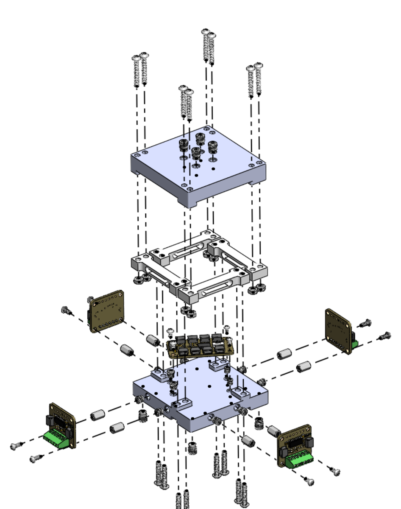

The hardware
Seventeen part types. Three are ours, and all three are printed. No custom PCB, no machining, no cast or molded elastomer.


Admittance hand-guiding at 199.8 Hz. The operator pushes, the sensor measures, the arm moves.
Open hardware · Three-axis force
Four off-the-shelf load cells carry the entire load path. There is no custom flexure, so the creep, hysteresis and temperature behavior that dominate a low-cost force sensor are inherited from a mass-produced part instead of introduced by one nobody characterized.
Johns Hopkins University · lfeng22@jh.edu
Almost every low-cost multi-axis force sensor works the same way. An inexpensive readout — optical, capacitive, a camera watching fiducials — measures how much a compliant structure deforms. That structure sets the range and the sensitivity, and it also contributes creep, hysteresis and drift with temperature.
Those terms are rarely quantified in published characterizations. So a user cannot tell how much of the reported error belongs to the readout and how much belongs to the flexure, and cannot predict how either behaves in a different task or a warmer room.
Here there is no such structure. Four commercial load cells are both the beams and the transducers, so the load path runs through parts whose beam geometry, gauge placement and bridge compensation were set at the factory.
Creep and temperature behavior come from a datasheet rather than from a part we made ourselves. You look them up instead of discovering them mid-experiment.
One fitted matrix absorbs placement error, cell-to-cell gain variation, wiring polarity and cross-coupling. Nothing has to be built accurately, only repeatably.
Seventeen part types. Three are ours, and all three are printed. No custom PCB, no machining, no cast or molded elastomer.

$116.55 for the electromechanical parts. Fasteners, cabling and filament excluded.
| Qty | Part | Role |
|---|---|---|
| 4 | TAL221 500 g bar load cell | the structure and the transducer, both |
| 4 | NAU7802 24-bit ADC breakout | one per cell, I²C address 0x2A |
| 1 | TCA9548A I²C multiplexer | address 0x70, A2:A0 to GND |
| 1 | Teensy 4.0 | reads the cells, applies the matrix, streams CSV |
| Printed part | Process | Notes |
|---|---|---|
| Upper plate | FDM, PLA | carries the tip |
| Lower plate | FDM, PLA | bolts to the robot flange |
| Interchangeable tip | FDM, PLA | sets contact height h, 38.6 mm here |
Calibrated range 0 to 4.9 N on every axis. Leave-one-out figures throughout, so each point is predicted by a fit built without it. In-sample residuals are 2.2 times smaller.
| Fx | Fy | Fz | |
|---|---|---|---|
| Leave-one-out error (N) | 0.0431 | 0.0330 | 0.0357 |
| Noise floor, 1σ (mN) | 3.2 | 3.5 | 2.6 |
| On-axis decoupling (%) | 100.1 | 99.7 | 99.6 |
| Hysteresis (% of span) | 0.111 | 0.421 | 1.112 |
Off-axis leakage stays below 1 %. Three overloads of 19.9 to 28.7 N against a 19.6 N rated limit each returned to zero within 0.05 N, so range is a purchasing decision rather than a redesign. Output is 212 Hz, emitted once every cell has a fresh sample.
Both instruments in series on a UR5e so each carries the same contact force, over 344,424 in-contact samples.

| Axis | Scale factor | r² | Residual about the fit |
|---|---|---|---|
| Fz | 0.953 | 0.998 | 0.048 N · 1.0 % of range |
| Fx | 0.865 | 0.993 | 0.114 N · 2.3 % of range |
| Fy | 0.873 | 0.993 | 0.121 N · 2.5 % of range |
Tracking is close. Absolute scale is not. What separates the two instruments is a fixed scale factor, not scatter and not a bend in the response, so a controller absorbs it in its gain without losing resolution or repeatability. The likely cause is that the arm was moved by hand during the comparison, which varies the contact height and therefore the lever arm.
The two frames were aligned with an orthogonal transform, not a general 3×3 fit. A general fit would have recalibrated the sensor against the reference and then reported the agreement it had just produced.


Force in, Cartesian velocity out. The operator pushes the tool and the arm follows.

The loop runs at 199.8 Hz. It responds to single-axis pushes and to simultaneous loading of all three axes, which confirms the sensor is fast and accurate enough on a moving robot rather than only on a bench. Mounting on the arm raises the noise floor three to four times above the bench.
Four vertical cells sense exactly three things, Fz, Mx and My. A lateral force is recovered from the moment it makes about the plane of the cells. For a contact at (xc, yc) and height h above that plane,
My = -Fx·h + Fz·xc
Mx = Fy·h - Fz·ycso the contact point has to be known. That suits a probe with fixed tip geometry rather than a general-purpose contact plate.
A single 3×4 matrix with bias maps four tared cell counts to (Fx, Fy, Fz). Firmware discovers which multiplexer channel each converter answers on at boot, so physical cell order does not matter, and it refuses to load a calibration whose channel map does not match the hardware present.
Four cells give four readings, but an external load can only produce three independent patterns among them. The fourth is a self-stress mode that no external force can excite, and nothing in calibration touches it. Ridge regularization holds its weight near zero rather than letting cell noise be amplified through it.
Stating these is the point of the project, so they are not buried.
firmware/lc_3_axis.ino runs on the Teensy 4.0. I²C at 400 kHz on pins 18 and 19, each ADC at gain 128 and 320 SPS. Serial at 115200, newline endings. Output is plain CSV in newtons.
0.0142,-0.0031,1.9847Lines beginning # are messages rather than data, so filter them when parsing. Press t to re-tare, since zero drifts with temperature and the matrix does not. r streams, p pauses, d adds the raw cell counts.
CAD is not published yet. The two plates and the tip are simple FDM parts and the geometry that matters is the contact height h.